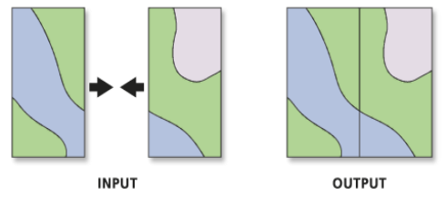
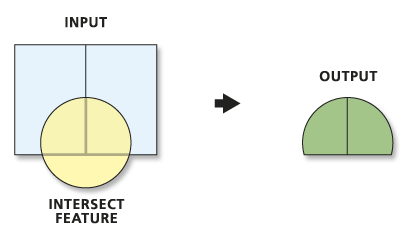
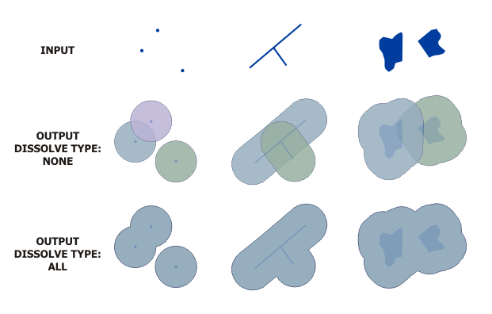
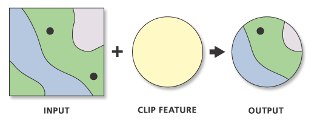
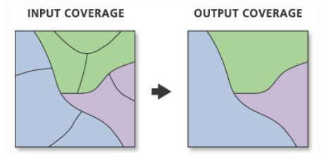

Operaciones de alteración
Operaciones de alteración
Las operaciones de alteración son las más comunes en un entorno SIG y son aquellas en dónde la manipulación es mayor y el vector de entrada es diferente al de salida, es decir puede cambiar la cantidad de datos asociados en terminos de información y/o geometría.
Entre las más utilizadas están:
Unión (Union)
Permite pegar información (gráfica y alfanumérica) de dos o más temas de iguales características. Las capas a unir deben tener campos comunes.

Ilustración: ESRI, 2018.
Intersección (Intersect)
Operación de superposición espacial cuyo resultado es la zona geográfica común de las capas que se superponen. Como resultado se obtiene una capa con las áreas que se sobreponen, así como también se agrega la información proveniente de cada uno de las capas intersectadas.

Ilustración ESRI, 2018.
Áreas de influencia (Buffer)
Herramienta que permite generar áreas de influencia a partir de una distancia asignada.

Ilustración: ESRI, 2018.
Cortar (Clip)
Recorta un área que nos interesa estudiar. Se necesitan dos capas, una zona de corte y otra donde se realiza la extracción de información.

Ilustración: ESRI, 2018.
Disolver (Dissolve)
Disuelve un atributo determinado en una capa, generando una nueva. Para ejecutar este proceso es necesario contar con una capa única (ya sea de punto, línea o polígono) y una columna en la tabla de atributos donde los registros compartan alguna característica común.

Ilustración: ESRI, 2018.
Le invitamos a que revise las siguientes ventanas dónde encontrará material para realizar estos geoprocesos en QGIS:
Manual
Videotutorial
Obra publicada con Licencia Creative Commons Reconocimiento Compartir igual 4.0